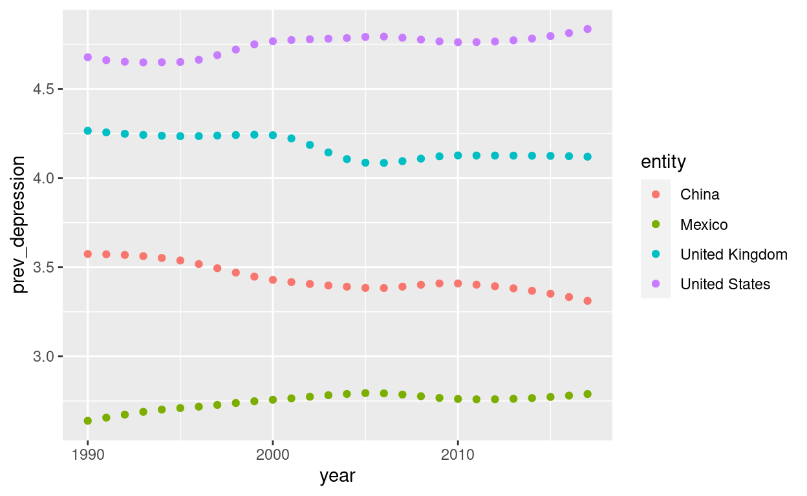
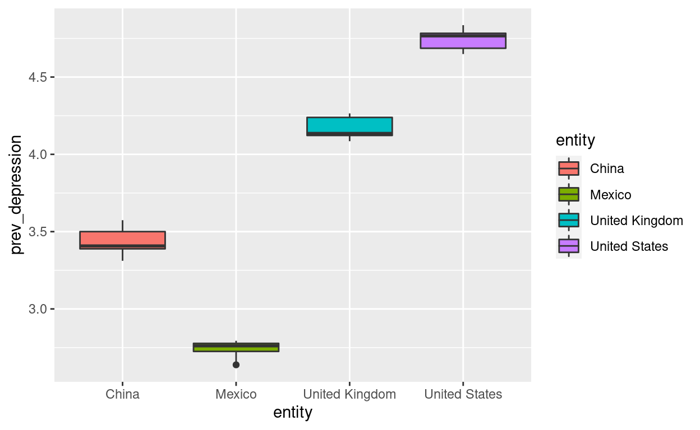
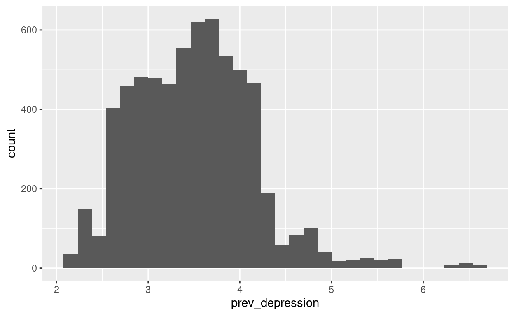
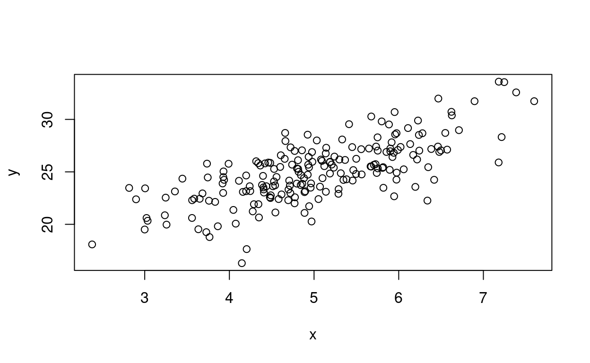
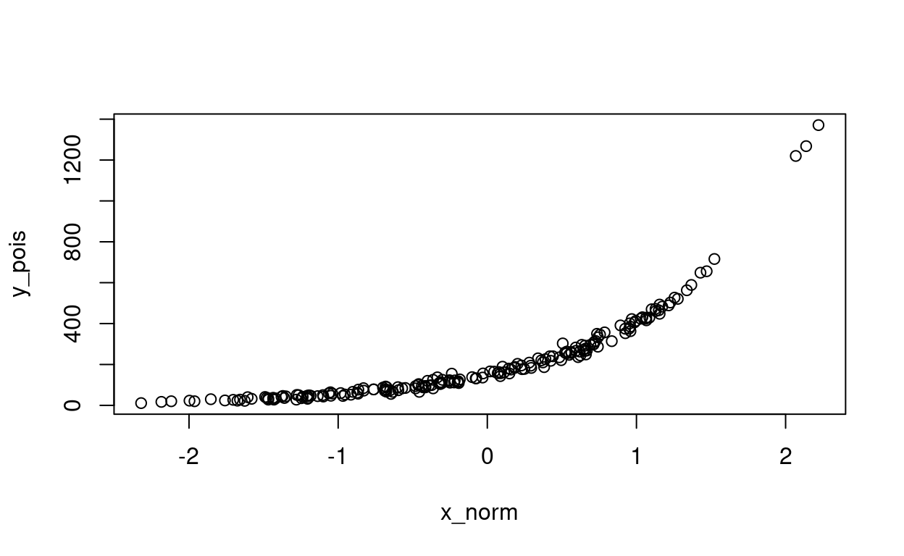

Welcome to my website. I hope you enjoy it and learn the basics of R programming!
Here are some basics about R syntax and some tips to keep in mind along the way:
To leave a comment or note in your code that you do not want R to read, use a #. #Example: R is not going to read this chunk of text because I started this line with a #. If your comment is more than one line, each line must start with a #. Leaving comments is such an important part of coding in any language. Use comments to your advantage to make your code more readable. Using comments helps others and yourself understand your code. If you walk away from your code and at a later time can’t recall the goal, that means someone else likely won’t understand either and you should add more/better comments!
To run a chunk of code in R, simply put your cursor anywhere with in that chunk of code and hit control + enter (or command + return for Mac’s) on your keyboard.
Most of the time, strings of text need to be captured in quotation marks for R to understand what you are trying to say.
I recommend typing your code in the R-script window as this allows you to make edits and corrections to your code
When installing packages, the package name must be enclosed in quotations and parentheses
Always make sure your parentheses and quotation marks have and opening and closing. Forgetting to close a parenthesis or quotation will result in an error. The easiest way to avoid this error is making sure your parentheses and quotation marks are closed before adding any text to them. You can also turn on rainbow parentheses in settings by going to code in the menu bar and then selecting rainbow parentheses.
In this section I want to discuss and demonstrate some ways to manage data using the tidyverse package and janitor package. The tidyverse package has several other packages within it that I will be using throughout the rest of the website (mainly dplyr, tibble, and ggplot2). The janitor package will be used to help us clean up variable names as necessary.
Step 1: Lets make sure all the packages we will need are installed at the beginning so they will be easy to find later. The tidyverse and janitor packages will help us to manage and visualize our data, and the owidR package is where I will be accessing all of the data I want to use. This data comes from Our World in Data: Mental Health Data.
Below I am using the search function from the owidR package to find a dataset of interset. Then, I am assigning the dataset of interest to the name “substancedisorder”. Next, I am viewing the raw dataset and turning it into a tibble so that it is easier for R to work with since this is a very large dataset.
# A tibble: 6,468 x 4
entity code year `Prevalence - Mental and substance use disor…
<chr> <chr> <int> <dbl>
1 Afghanis… AFG 1990 17.6
2 Afghanis… AFG 1991 17.8
3 Afghanis… AFG 1992 18.1
4 Afghanis… AFG 1993 18.3
5 Afghanis… AFG 1994 18.4
6 Afghanis… AFG 1995 18.5
7 Afghanis… AFG 1996 18.5
8 Afghanis… AFG 1997 18.5
9 Afghanis… AFG 1998 18.4
10 Afghanis… AFG 1999 18.4
# … with 6,458 more rowsFirst, we want to rename the prevalence variable from our substance disoder data set because right now it is unnecessarily long. We are going to do this with the janitor package that is very helpful in cleaning names. The janitor packages removes all unique characters and replaces spaces with "_". Then we are going to rename using dyplyr to make the name shorter and more convenient. I use a pipe (%>%) here to make this a little easier, and I will describe more how pipes work later.
r template: select(data-frame, column-name) r code: select(substancedisorder, entity)
# A tibble: 6,468 x 1
entity
<chr>
1 Afghanistan
2 Afghanistan
3 Afghanistan
4 Afghanistan
5 Afghanistan
6 Afghanistan
7 Afghanistan
8 Afghanistan
9 Afghanistan
10 Afghanistan
# … with 6,458 more rowsr code: select(substancedisorder, entity, year, prevalence)
# A tibble: 6,468 x 3
entity year prevalence
<chr> <int> <dbl>
1 Afghanistan 1990 17.6
2 Afghanistan 1991 17.8
3 Afghanistan 1992 18.1
4 Afghanistan 1993 18.3
5 Afghanistan 1994 18.4
6 Afghanistan 1995 18.5
7 Afghanistan 1996 18.5
8 Afghanistan 1997 18.5
9 Afghanistan 1998 18.4
10 Afghanistan 1999 18.4
# … with 6,458 more rowsThere are lots of other helper functions we can use with the select() argument. This helps us to selects lots of columns that might have the same suffix or prefix (in addition to many other options).
r code: select(substancedisorder, contains("n"))
# A tibble: 6,468 x 2
entity prevalence
<chr> <dbl>
1 Afghanistan 17.6
2 Afghanistan 17.8
3 Afghanistan 18.1
4 Afghanistan 18.3
5 Afghanistan 18.4
6 Afghanistan 18.5
7 Afghanistan 18.5
8 Afghanistan 18.5
9 Afghanistan 18.4
10 Afghanistan 18.4
# … with 6,458 more rowsThis only selected columns “entity” and “prevalence” since those were the only two columns with an “n” in their name! If we had two columns that both started with the suffix “pre” we could have used the helper starts_with() inside of the select argument.
Takeaway: We can select whatever columns we want, in many different ways to make our lives easier!
Now we are going to learn how to use the filter() argument to extract rows of data and turn them into a new data-frame. r template: filter(data-frame, column-name == "variable-name") One important thing to note in the filter argument is the double equal sign. Another important thing to notice is that filter extracts rows of an existing data-frame and returns them as a new data-frame.
r code: filter(substancedisorder, entity == "Albania")
# A tibble: 28 x 4
entity code year prevalence
<chr> <chr> <int> <dbl>
1 Albania ALB 1990 11.0
2 Albania ALB 1991 11.0
3 Albania ALB 1992 11.0
4 Albania ALB 1993 11.1
5 Albania ALB 1994 11.1
6 Albania ALB 1995 11.1
7 Albania ALB 1996 11.1
8 Albania ALB 1997 11.1
9 Albania ALB 1998 11.1
10 Albania ALB 1999 11.1
# … with 18 more rowsr code: filter(substancedisorder, entity == "Afghanistan" & prevalence > 18.0)
# A tibble: 11 x 4
entity code year prevalence
<chr> <chr> <int> <dbl>
1 Afghanistan AFG 1992 18.1
2 Afghanistan AFG 1993 18.3
3 Afghanistan AFG 1994 18.4
4 Afghanistan AFG 1995 18.5
5 Afghanistan AFG 1996 18.5
6 Afghanistan AFG 1997 18.5
7 Afghanistan AFG 1998 18.4
8 Afghanistan AFG 1999 18.4
9 Afghanistan AFG 2000 18.4
10 Afghanistan AFG 2001 18.3
11 Afghanistan AFG 2002 18.1Note: Afghanistan needs to be a quotation marks because it is character, and prevalence does not need quotation marks because it is numeric.
Now, we are going to learn how to use the arrange() function. arrange() reorders the way your rows are set up r template: arrange(data-frame, column-name(s))
Note: you can arrange by a single column name or by multiple columns.
r code: arrange(substancedisorder, year)
# A tibble: 6,468 x 4
entity code year prevalence
<chr> <chr> <int> <dbl>
1 Afghanistan AFG 1990 17.6
2 Albania ALB 1990 11.0
3 Algeria DZA 1990 14.7
4 American Samoa ASM 1990 10.8
5 Andean Latin America <NA> 1990 12.3
6 Andorra AND 1990 14.7
7 Angola AGO 1990 12.5
8 Antigua and Barbuda ATG 1990 13.2
9 Argentina ARG 1990 15.5
10 Armenia ARM 1990 10.6
# … with 6,458 more rowsNote: R automatically arranged the column year in ascending order. Looks what happens when we arrange by code.
r code: arrange(substancedisorder, code)
# A tibble: 6,468 x 4
entity code year prevalence
<chr> <chr> <int> <dbl>
1 Afghanistan AFG 1990 17.6
2 Afghanistan AFG 1991 17.8
3 Afghanistan AFG 1992 18.1
4 Afghanistan AFG 1993 18.3
5 Afghanistan AFG 1994 18.4
6 Afghanistan AFG 1995 18.5
7 Afghanistan AFG 1996 18.5
8 Afghanistan AFG 1997 18.5
9 Afghanistan AFG 1998 18.4
10 Afghanistan AFG 1999 18.4
# … with 6,458 more rowsR automatically arranged the column code in alphabetical order.
r code: arrange(substancedisorder, year, prevalence)
# A tibble: 6,468 x 4
entity code year prevalence
<chr> <chr> <int> <dbl>
1 Colombia COL 1990 10.1
2 Mexico MEX 1990 10.4
3 Central Latin America <NA> 1990 10.5
4 Azerbaijan AZE 1990 10.5
5 Honduras HND 1990 10.5
6 Tajikistan TJK 1990 10.6
7 Armenia ARM 1990 10.6
8 Panama PAN 1990 10.7
9 Nicaragua NIC 1990 10.7
10 Georgia GEO 1990 10.8
# … with 6,458 more rowsR first arranged the column year in ascending order and then arranced prevalence within year.
Note: the order you put the column names matters. The column name you put first will be how your data-frame gets primarily arranged by. Lets see what it looks like if we arrange by prevalence and then year.
r code: arrange(substancedisorder, prevalence, year)
# A tibble: 6,468 x 4
entity code year prevalence
<chr> <chr> <int> <dbl>
1 Vietnam VNM 2016 9.72
2 Vietnam VNM 2017 9.72
3 Vietnam VNM 2015 9.73
4 Vietnam VNM 2014 9.74
5 Vietnam VNM 2013 9.75
6 Vietnam VNM 2012 9.78
7 Vietnam VNM 2011 9.80
8 Vietnam VNM 2010 9.83
9 Vietnam VNM 2009 9.86
10 Vietnam VNM 2008 9.90
# … with 6,458 more rowsAs you can see, by simple changing the order of year and prevalence, we get two very different looking data-frames.
Like I said before, R automatically arranges in ascending order, however, we can change that by using the desc() argument for a column name.
r code: arrange(substancedisorder, desc(prevalence), year)
# A tibble: 6,468 x 4
entity code year prevalence
<chr> <chr> <int> <dbl>
1 New Zealand NZL 2005 19.1
2 New Zealand NZL 2004 19.1
3 New Zealand NZL 2003 19.1
4 New Zealand NZL 2002 19.1
5 New Zealand NZL 2006 19.1
6 New Zealand NZL 2001 19.1
7 New Zealand NZL 2000 19.0
8 New Zealand NZL 1999 19.0
9 New Zealand NZL 2007 19.0
10 New Zealand NZL 1998 19.0
# … with 6,458 more rowsBy doing this, we get the highest prevalence rates first, and then we get the corresponding years.
The last thing I want to cover in this section is using a pipe operator which is symbolized in R as %>%. The pipe operator is like saying “then” if we were writing a sentence. So, for example, we can tell R to select a column THEN filter a row THEN arrange that row.
# A tibble: 1,000 x 3
entity year prevalence
<chr> <int> <dbl>
1 New Zealand 2005 19.1
2 New Zealand 2004 19.1
3 New Zealand 2003 19.1
4 New Zealand 2002 19.1
5 New Zealand 2006 19.1
6 New Zealand 2001 19.1
7 New Zealand 2000 19.0
8 New Zealand 1999 19.0
9 New Zealand 2007 19.0
10 New Zealand 1998 19.0
# … with 990 more rowsAgain, the order that you choose to select, filter, and arrange matters. For example, if you try to filter by a column that is not included in the select() argument, you may run into issues, so be sure to pay close attention!
One important thing to learn when it comes to managing and cleaning data is restructuring, and the difference between tidy and untidy data. Tidy data is a specific structure or format of data that is the easiest to use in R
With that being said, not all data we encounter will be in tidy format. There’s going to be lots of times that we are given untidy data and we need to make it tidy.
Here are some functions we can use to make untidy data tidy.
Note: these methods largley depend on what your untidy data originally looks like. This should’t be considered a solution to all untidy data.
r template: gather(data-frame, old_column1 = "new_column1", old_column2 = "new_column2") For example, lets say our substancedisorder table had prevalence split up across two columns with n observations in each cell. This would be an example of untidy data. To fix that issue, we could do the following:
r example code: gather(substancedisorder, key = "prevalence", value = "number of observations", 2, 3) Doing this would gather the values that were the previous prevalence headers and move them into one column, and then make a new column for number of observations. Note: The “2,3” after making the number of observations column tells R how many columns we are collapsing into one.
r template: spread(data-frame, key = name of key variable, value = name of value variable)
The key varible is the variable that stores multiple variables – for example, in our data substancedisorder, the key variable is year. The value variable is the variable containing the actual value being measure. In our data, the value variable is prevalence. The point of the spread() function here is to spread the variables in the key column across their own separate columns.
Example using spread() r code: spread(substancedisorder, key = year, value = prevalence)
# A tibble: 231 x 30
entity code `1990` `1991` `1992` `1993` `1994` `1995` `1996`
<chr> <chr> <dbl> <dbl> <dbl> <dbl> <dbl> <dbl> <dbl>
1 Afghanistan AFG 17.6 17.8 18.1 18.3 18.4 18.5 18.5
2 Albania ALB 11.0 11.0 11.0 11.1 11.1 11.1 11.1
3 Algeria DZA 14.7 14.7 14.7 14.7 14.7 14.7 14.7
4 American Sa… ASM 10.8 10.8 10.8 10.8 10.8 10.8 10.8
5 Andean Lati… <NA> 12.3 12.4 12.4 12.4 12.4 12.4 12.4
6 Andorra AND 14.7 14.7 14.7 14.7 14.7 14.7 14.7
7 Angola AGO 12.5 12.5 12.5 12.5 12.5 12.5 12.5
8 Antigua and… ATG 13.2 13.2 13.1 13.1 13.1 13.2 13.2
9 Argentina ARG 15.5 15.5 15.5 15.5 15.6 15.6 15.6
10 Armenia ARM 10.6 10.7 10.7 10.7 10.7 10.7 10.7
# … with 221 more rows, and 21 more variables: 1997 <dbl>,
# 1998 <dbl>, 1999 <dbl>, 2000 <dbl>, 2001 <dbl>, 2002 <dbl>,
# 2003 <dbl>, 2004 <dbl>, 2005 <dbl>, 2006 <dbl>, 2007 <dbl>,
# 2008 <dbl>, 2009 <dbl>, 2010 <dbl>, 2011 <dbl>, 2012 <dbl>,
# 2013 <dbl>, 2014 <dbl>, 2015 <dbl>, 2016 <dbl>, 2017 <dbl>This spreads all the values of year across their own columns, with the prevalence in each cell.
Note: notice that in the gather() function, we use quotation marks around the new column names, where in spread() we do not use quotation marks at all. This is because in gather() we are actually creating a new variable, but in spread() we are just spreading out already existing variables.
One more useful thing that we can learn to help us manage our data is joining data-sets. There will likely be several times where we have two different data sets with useful information and we wish to combine that information into one table.
One function that can help us with this is the bind_cols() function. This function is particularly useful when we have two tables that have the same observations in the same order.
Imagine we had two tables for substancedisorder, and the observations were in the same order: 1. Table one had columns entity and year 2. Table two had columns code and prevalence
How could we combine this into one big table?
r template code: table1 %>% bind_cols(table2)
Now, this seems like a pretty simple way to combine two tables. However, there is a major disadvantage here to take note of. If you are trying to use this method to combine two tables that are quite long, R cannot tell for certain that the rows and observations line up exactly in the correct order. Therefore, I would recommend only using this method when you can be certain everything lines up in the exact same order. For example, to combine two tables that have a very small amount of rows.
Now, lets say we had two tables for substancedisorder that had the same columns, but different observations.To combine these two tables, we can use the bind_rows() function. This function will essentially stack the tables on top of each other.
r template code: table1 %>% bind_rows(table2)
Often times, there will be situations where you will have duplicate observations when we combine two tables. The way around this issue is to take advantage of the union() function. The union function combines each row that appears in both of the data-sets, but it conveniently removes any duplicate copies.
r template: table1 %>% union(table2)
Easy, and convenient!
One of the most important tools in an exploratory analysis is creating graphical displays and visualizations of your data. This helps you to notice any trends, areas of concerns, and to make predictions/hypotheses. In R, one of the most helpful packages for creating these visualizations is ggplot2. Conveniently, ggplot2 is another package that is part of the tidyverse!
Lets look at a data set that shows the share of the population with depression.
# A tibble: 6,468 x 4
entity code year `Prevalence - Depressive disorders - Sex: Bo…
<chr> <chr> <int> <dbl>
1 Afghanis… AFG 1990 4.07
2 Afghanis… AFG 1991 4.08
3 Afghanis… AFG 1992 4.09
4 Afghanis… AFG 1993 4.10
5 Afghanis… AFG 1994 4.10
6 Afghanis… AFG 1995 4.10
7 Afghanis… AFG 1996 4.11
8 Afghanis… AFG 1997 4.11
9 Afghanis… AFG 1998 4.11
10 Afghanis… AFG 1999 4.12
# … with 6,458 more rowsAgain, I want to rename the prevalence variable since it is long and will become extremely tedious to use if it is not changed. Refresher on renaming variables: 1. clean it up with the janitor package (this will remove spaces and special characters) 2. use clean_names argument 3. use rename argument. Remember, rename(newname=oldname)
Note: we are going to do this using the pipe operator like before. Also, note that we can rename multiple variables by separating the variables with a comma. This is a common feature throughout R.
Now that we have the variable names in an easier-to-use format, we can get on to doing some visualizations! We can make lots of different plots using ggplot2. I will show how to make just a handful of common ones.
Some important things to know before we start plotting is how ggplot2 works: 1. ggplot2 works in layers 2. the first layer is the dataset 3. the second layer are the coordinates 4. the third layer are the geoms, which are what we choose to visualize our data points
Here is the very basic template for ggplot that incorporates all 3 layers above:
ggplot(data=data-frame) + geom_ (mapping = aes(x = x-variable, y = y-variable))
The argument that you put after “geom_” will tell R what kind of geoms to use, and therefore what kind of plot we are making
First, we need to choose which countries we want to compare. Lets look at: United States, United Kingdom, Mexico, and China. We need to refine our dataset to only include these countries. We can do this by combining some of the skills we learned earlier. Lets try to do this by filtering out rows.
Now we have a data set containing the countries we want to compare. Now lets visualize this.

This produced a plot for us that shows the prevalence of depression for each of the countries we selected. Now we can use this to note some patterns and develop some questions:
Our data only contains information on the prevalence of depression in these countries. However, if we had more information, after looking at this data we could investigate why certain countries are on a downwards trend and some are on an upwards trend. We could potentially look into some demographics such as age, socioeconomic status, employment status, etc. that could help explain what we are seeing visually.

This produced a nice side-by-side boxplot for us to visualize the spread of depression prevalence for each country we picked. Out of the four countries we picked, we can see that Mexico has the tightest spread of data points, but it does appear to have an outlier.The other three countries have a little bit of a wider spread of data, but no major outliers.

This histogram is showing us the distribution of prevalence in the whole depression dataset. This is telling us that the data looks right-skewed, and that having a prevalence of depression around 3.5-4.0 is the most common
Lastly, I want to quickly go over how to create summaries of our data. Summaries can be beneficial to look at because they give us information on things like: - The range of our data, - a comparison of our mean and median, - and what our standard deviation is.
This can be useful information when we want to have the numbers to in addition to the graphics to describe the spread of our data.
# A tibble: 1 x 5
max min mean median std
<dbl> <dbl> <dbl> <dbl> <dbl>
1 4.84 4.65 4.74 4.77 0.0576This gives us a 1x5 tibble containing the max, min, mean, median, and standard deviation of depression prevalence for the US. We can do this for any of the countries in our data set and compare them.
# A tibble: 1 x 5
max min mean median std
<dbl> <dbl> <dbl> <dbl> <dbl>
1 2.79 2.64 2.75 2.76 0.0427Like we saw with our visualizations, we can see that the US has a migher mean for depression prevalence than Mexico. But now, we are able to put specific numbers to that comparison. We now know that the mean prevalence of depression in the US is 4.74 and the mean prevalence of depression in Mexico is 2.75, a difference of 1.99.
Like I said, creating visualizations is such an important part of data science/statistics so that we can get a full picture of what our data is trying to tell us. With that being said, we need to know the right kinds of plots to make according to our data.Here is a little cheat-sheet to know what kind of plots to make if you are unsure.
There are many more plot options than the ones I just showed you, but these are a good start to knowing how to visualize your data.
Why is simulating data important? Simulating data is important in statistics and data science because it allows us to generate random values that could help us validate our modeling and avoid bias.
Most people have heard of random number generating in excel, but there is a great way to do this in R too! In R, we can simulate data for different types of probability distributions, like: - Normal distributions, Poisson distributions, and Binomial distributions.
Here are the functions we can use: 1. norm, 2. dnorm, 3. pnorm, 4. and rpois.
In this section I want to focus on simulating random numbers/data, which means we are going to focus on the functions that start with “r” (Ex: rnorm and rpois).
rnorm: this allows us to simulation normal variates and it also produces a mean and standard devaition of the data rpois: this allows us to simulate random data for a Poisson distribution
Note: I will mainly be using rnorm here, just remember that this can also be done with rpois.
Here are some examples:
r template: rnorm(n, mean = __, sd = __) r code: rnorm(10, mean = 0, sd = 1)
[1] -0.912863899 0.949210625 -1.113941681 -1.106708616 0.076497727
[6] -0.546240150 -0.805317831 1.454871674 -0.001745489 -1.537215938This generates 10 random numbers for us following the parameters of mean = 0 and sd = 1
Here’s another way to simulate 10 random numbers for mean = 0 and sd = 1:
Assign rnorm(10) to x (or anything you want), and then view x. Note: We get different numbers generated between the two methods because this is a random number generator.
By assigning rnorm(10) to x, its like telling R to save theses numbers. We will be able to reuse these numbers instead of having new numbers every time.
Note: By not including mean = 0 and sd = 1 in the example below, R is just assuming mean = 0 and sd = 1 to be the default values.
x <- rnorm(10)
x
[1] -0.16330369 0.13092329 0.72438757 -0.66871643 0.02968228
[6] -1.02378013 0.11668986 -0.95895249 -0.37735768 -1.01376072What does it look like if we change the mean and sd from the default values? Let’s look at normal distribution for 50 values, mean = 10, and sd = 5. let’s assign this to the letter r:
r <- rnorm(50, mean = 10, sd = 5)
r [1] 12.2029137 8.8497531 3.4250106 4.7411298 9.9775036 3.3795965
[7] 7.8423198 4.3373310 8.7336344 13.2603188 2.1691043 15.9664552
[13] 16.2254995 4.5435073 7.3063293 -0.8728896 -4.1321830 11.6167525
[19] 4.3870548 3.7478208 6.3013704 15.9916336 12.0399418 4.9466766
[25] 6.7576201 4.6592667 13.4406968 13.6146202 7.2579480 1.5674626
[31] 15.6650529 8.0371120 4.4254964 13.9608393 12.7557229 6.5137373
[37] 10.8380306 8.2401563 5.4638663 11.5126727 12.2839263 11.0110718
[43] 11.7851499 -1.8262129 6.1552962 18.4743950 8.7514787 17.0706969
[49] 5.9391100 -0.9621116We get 50 random numbers with much larger values than when we did mean = 0 and sd = 1. Lets look at the 5 number summaries for both x and r to compare:
summary(x)
summary(r)
Min. 1st Qu. Median Mean 3rd Qu. Max.
-1.02378 -0.88639 -0.27033 -0.32042 0.09494 0.72439 Min. 1st Qu. Median Mean 3rd Qu. Max.
-4.132 4.572 7.940 8.208 12.162 18.474 We see that when comparing the summaries of r and x, r has a much larger range of values and that the median and mean are both much higher. This was to be expected since we increased the mean and sd of r!
Now that we learned the basics of how to produce random numbers, we need to learn how to make these numbers/results reproducible. We can do this by setting a seed. The set.seed() function does this for us. When you set the seed, you can set it to any number you want, just be sure it is something easy to remember and simple to use (i.e. I wouldn’t recommend using a 10-digit number as that could become annoying to use and it could become easy to make a typo).
set.seed(1) rnorm (50, mean = 20, sd = 5)
[1] 16.867731 20.918217 15.821857 27.976404 21.647539 15.897658
[7] 22.437145 23.691624 22.878907 18.473058 27.558906 21.949216
[13] 16.893797 8.926501 25.624655 19.775332 19.919049 24.719181
[19] 24.106106 22.969507 24.594887 23.910682 20.372825 10.053242
[25] 23.099129 19.719356 19.221022 12.646238 17.609250 22.089708
[31] 26.793398 19.486061 21.938358 19.730975 13.114702 17.925027
[37] 18.028550 19.703433 25.500127 23.815879 19.177382 18.733192
[43] 23.484817 22.783316 16.556222 16.462524 21.822910 23.842665
[49] 19.438269 24.405539This ensures that whenever we use seed(1), we get the same numbers we produced with the rnorm statement above.
Simulating random numbers can be a useful thing to do as a statistician, however, we are also able to simulate results/values that come from a specific model that we want to validate.
Lets simulate numbers from a simple linear regression model using a normal distribution! Remember, a SLR line equation looks like this:
This means we need to simulate the values for x and e separately!
First, lets set the seed: set.seed(5)
Next, lets simulate x (lets do 200 values, mean = 5, sd = 1): x <- rnorm(200, mean = 5, sd = 1) x
[1] 4.159145 6.384359 3.744508 5.070143 6.711441 4.397092 4.527834
[8] 4.364629 4.714226 5.138108 6.227630 4.198221 3.919607 4.842466
[15] 3.928240 4.861014 4.402687 2.816033 5.240817 4.740645 5.900512
[22] 5.941869 6.467962 5.706761 5.819009 4.706518 6.418589 6.498774
[29] 4.342918 4.147205 5.315915 6.109694 7.215461 6.217104 6.479222
[36] 5.951574 3.990467 2.999527 3.237814 4.857392 6.550060 4.197577
[43] 4.925421 6.895668 4.543431 5.562223 4.112991 4.539755 4.275672
[50] 4.930789 6.463249 5.187726 6.022023 4.408165 4.887799 4.075047
[57] 5.753305 4.887391 4.935909 5.233275 3.863417 5.854830 4.421630
[64] 5.496362 4.239942 4.658614 2.897671 4.698298 3.727617 4.720334
[71] 4.795903 4.774386 5.347028 5.032368 5.413531 4.844652 5.973485
[78] 5.121090 5.189174 4.437115 5.498416 3.257698 5.975529 4.975917
[85] 5.675684 4.289690 7.387233 4.526568 4.924227 4.478160 5.926047
[92] 3.937589 5.557034 5.900731 5.989946 5.383608 4.653416 4.459811
[99] 4.817444 4.940700 3.004613 6.135311 5.675795 5.208483 4.942154
[106] 5.893811 4.771135 3.034347 4.246490 6.280152 4.047095 6.622379
[113] 7.600142 5.139649 3.649280 5.798931 3.445004 5.463720 5.052430
[120] 4.797968 6.170856 5.884845 3.682111 3.356749 6.059250 5.290084
[127] 4.599967 6.243096 3.633589 3.558587 6.348549 3.021472 3.759049
[134] 4.895961 5.732973 5.455680 5.288080 3.926309 5.648743 5.299162
[141] 4.204005 4.970647 7.180236 5.957418 4.694951 4.581597 5.099954
[148] 4.770190 3.584785 4.607401 5.946089 5.751771 4.482623 5.808336
[155] 4.385465 6.238259 4.661905 6.196366 4.556682 5.186115 2.378655
[162] 7.246255 5.093432 6.627280 4.489082 4.340619 4.959810 4.881306
[169] 4.980343 4.514322 3.559852 5.143769 3.765413 3.247499 4.964504
[176] 5.332035 6.572288 3.930529 5.916287 4.405007 7.181647 4.316227
[183] 5.750059 5.974383 3.735527 4.722579 4.810601 4.615975 5.740588
[190] 3.831662 5.667539 5.366237 4.485057 5.450568 4.812280 6.339069
[197] 5.816219 5.082202 4.349137 5.726409Next, lets simulate the error term (200 values, mean = 5, sd = 2): e <- rnorm(200, mean = 5, sd = 2) e
[1] 4.7726436 4.4097983 6.9783369 3.4497364 5.5517965
[6] 5.8215633 6.2223663 6.8731414 4.2649166 6.4807535
[11] 7.4370661 6.2582689 6.0554926 4.0554894 6.6474303
[16] 4.1444235 4.7147121 7.8375661 5.9742678 6.2068829
[21] 5.4216658 4.9334016 9.0503940 4.2584265 1.8435311
[26] 4.7568561 1.4066464 4.0488169 3.2317954 -1.9961180
[31] 4.2360333 6.9553763 3.8839181 3.7470897 3.9390975
[36] 8.7952432 7.7910814 3.5079483 4.3888538 7.3393563
[41] 5.6087744 4.7650035 4.8798289 7.9418779 2.0437048
[46] 3.6327741 5.9210812 4.6369961 2.6823674 5.8180378
[51] 4.4835859 4.4662011 5.3283119 4.2130821 1.3125255
[56] 1.9154235 3.8275193 3.2957222 6.5566491 4.9393659
[61] 2.0886848 5.1875698 6.9646984 3.8065797 5.1496097
[66] 9.3948589 6.5900464 3.9221156 1.7974336 3.5372529
[71] 4.2885184 3.0291714 3.5376587 7.9306482 8.7172306
[76] 5.0069941 2.3124495 5.3025881 5.5800183 4.7550433
[81] 5.2503088 3.4551318 2.9740678 6.9338392 4.1533454
[86] 3.3368011 7.7999145 5.0340279 8.6949939 3.6273212
[91] 4.5625519 6.3651858 6.0482600 5.1611000 5.1075711
[96] 3.5254820 6.9328761 6.9686137 5.3745819 5.5459715
[101] 7.4202922 5.3773143 8.9249973 5.2774239 1.8427453
[106] 3.4059575 7.4487078 4.2693329 4.6748194 6.1209584
[111] 3.2785487 7.4772690 6.5348715 2.8251818 5.1350075
[116] 8.2102811 7.4644589 4.2417724 2.3002668 5.7298362
[121] 4.2728102 7.7493066 5.5837915 6.4211834 3.1244782
[126] 2.7718737 6.2687439 4.5376142 2.2636116 3.4901851
[131] 2.7488067 4.5612815 4.7313841 3.3639588 5.9446683
[136] 3.2614877 2.3354233 5.1411257 5.9281864 5.5783170
[141] -0.7698822 0.3306164 1.5382179 6.6500192 2.9099209
[146] 3.2456133 4.1992203 2.4636221 5.2771728 7.3671432
[151] 0.7788899 5.5213522 6.8911337 3.7600788 4.9817985
[156] 6.0404508 8.6125174 1.1749602 5.3985642 5.5529699
[161] 3.3274471 9.0591948 5.8582120 7.1278957 3.7883539
[166] 7.1487461 3.5753047 4.6422797 5.9995201 4.6008577
[171] 5.1797896 7.0098201 1.2541167 6.0495691 3.9707453
[176] 7.4218651 3.9744092 7.1812513 5.9836898 4.5147421
[181] 9.2320945 7.3772791 6.7905224 6.7370813 8.3123559
[186] 7.8912720 6.4892009 3.6196196 3.4171765 4.4758376
[191] 4.1841658 5.4026221 3.5361050 6.4582714 5.6532972
[196] -0.4157558 3.8157222 6.0090874 1.9546058 4.2822496Now, lets put these values in the SLR model: y <- 10 + 2 * x + e y
[1] 23.09093 27.17852 24.46735 23.59002 28.97468 24.61575 25.27803
[8] 25.60240 23.69337 26.75697 29.89233 24.65471 23.89471 23.74042
[15] 24.50391 23.86645 23.52009 23.46963 26.45590 25.68817 27.22269
[22] 26.81714 31.98632 25.67195 23.48155 24.16989 24.24382 27.04636
[29] 21.91763 16.29829 24.86786 29.17476 28.31484 26.18130 26.89754
[36] 30.69839 25.77202 19.50700 20.86448 27.05414 28.70890 23.16016
[43] 24.73067 31.73321 21.13057 24.75722 24.14706 23.71651 21.23371
[50] 25.67962 27.41008 24.84165 27.37236 23.02941 21.08812 20.06552
[57] 25.33413 23.07050 26.42847 25.40592 19.81552 26.89723 25.80796
[64] 24.79930 23.62949 28.71209 22.38539 23.31871 19.25267 22.97792
[71] 23.88032 22.57794 24.23172 27.99538 29.54429 24.69630 24.25942
[78] 25.54477 25.95837 23.62927 26.24714 19.97053 24.92513 26.88567
[85] 25.50471 21.91618 32.57438 24.08716 28.54345 22.58364 26.41465
[92] 24.24036 27.16233 26.96256 27.08746 24.29270 26.23971 25.88824
[99] 25.00947 25.42737 23.42952 27.64794 30.27659 25.69439 21.72705
[106] 25.19358 26.99098 20.33803 23.16780 28.68126 21.37274 30.72203
[113] 31.73516 23.10448 22.43357 29.80814 24.35447 25.16921 22.40513
[120] 25.32577 26.61452 29.51900 22.94801 23.13468 25.24298 23.35204
[127] 25.46868 27.02381 19.53079 20.60736 25.44590 20.60422 22.24948
[134] 23.15588 27.41061 24.17285 22.91158 22.99374 27.22567 26.17664
[141] 17.63813 20.27191 25.89869 28.56486 22.29982 22.40881 24.39913
[148] 22.00400 22.44674 26.58195 22.67107 27.02489 25.85638 25.37675
[155] 23.75273 28.51697 27.93633 23.56769 24.51193 25.92520 18.08476
[162] 33.55170 26.04508 30.38246 22.76652 25.82998 23.49492 24.40489
[169] 25.96021 23.62950 22.29949 27.29736 18.78494 22.54457 23.89975
[176] 28.08593 27.11899 25.04231 27.81626 23.32476 33.59539 26.00973
[183] 28.29064 28.68585 25.78341 27.33643 26.11040 22.85157 24.89835
[190] 22.13916 25.51924 26.13510 22.50622 27.35941 25.27786 22.26238
[197] 25.44816 26.17349 20.65288 25.73507Last, lets look at the summary of our model and make a simple plot of our values for x and y: summary(y) plot(x,y)
Min. 1st Qu. Median Mean 3rd Qu. Max.
16.30 23.15 25.03 25.01 26.89 33.60 
Done! We just successfully simulated a SLR model that follows a normal disrtibution! The awesome thing is, we can do this for all sorts of distributions too like binary and poisson distributions!
To do this for a binary distribution, we would have used the rbinom() argument instead.
To do this for a Poisson distribution, we would have used the rpois argument, and taken the exponential value of the mean from a normal distribution.
Again, this super important to set the seed so we can reproduce these results! r code: set.seed(10)
This simulates the predictor variable x as before: r code: x_norm <- rnorm (200, mean = 0, sd = 1)
This calculates the log mean of the model: r code: log_mean <- 5 + 1 * x_norm
This takes the exponential value to make it a Poisson distrubution: r code: y_pois <- rpois (200, exp(log_mean))
As before, this gives us the 5-number summary: r code: summary(y_pois)
Min. 1st Qu. Median Mean 3rd Qu. Max.
11.0 65.5 134.0 203.1 279.2 1371.0 Again, as before, this gives us a basic y vs x plot that shows us what our model looks like. r code: plot(x_norm, y_pois)

Done! We successfully simulated random data, an SLR model, and a Poisson Distribution!
When you are new to a programming language, it is easy to get frustrated when errors occur. Especially if you don’t understand what those error messages are trying to tell you. Most of the time, error messages can be resolved pretty easily if you know what to look for. Below are some of the most common error messages, and some things to go back and double check your code for in attempt to resolve the error.
What it means: this means that r could not find the function you are trying to use. How to fix this: first, always double check that you do not have any typos. Remember - R is case sensitive, so make sure you keep your cases consistent. This could also mean that the package required to use this function is not loaded. Double check that all your necessary packages are loaded, and worst case scenario, save your work, restart R, and reload your packages.
What it means: this means that there is an issue in your conditional statement. How to fix this: make sure that your data is logical, and that there aren’t any missing values messing up your conditional statement(s).
What it means: This means that you have probably referenced an object that doesn’t exist. How to fix this: Make sure that there are no typos, and that you are being mindful about case-sensitivity.
What it means: This likely means that a file or a connection cannot be opened simply because R cannot find it. How to fix it: make sure that if you are using a file path, that this path is correct.As always, make sure there are not typos or case issues and make sure that you are not missing something like a forward slash.
What it means: This is a simple fix and likely means that you just forgot to add a comma somewhere. How to fix it: Go back to your code and make sure commas and other punctuation are in the correct spot.
Of course, there is so much more to learn about R here than what I showed you. However, these are the basics and will set you on the right track to creating some amazing projects in R.
As a last note, I want to leave everyone with some more resources to help expand your ability to use R in addition to the resources I used to create this website and its content.
https://www.rstudio.com/wp-content/uploads/2015/02/rmarkdown-cheatsheet.pdf https://happygitwithr.com/rstudio-git-github.html https://www.apreshill.com/blog/2020-12-postcards-distill/ https://www.rstudio.com/resources/cheatsheets/ https://www.r-bloggers.com/2016/06/common-r-programming-errors-faced-by-beginners/